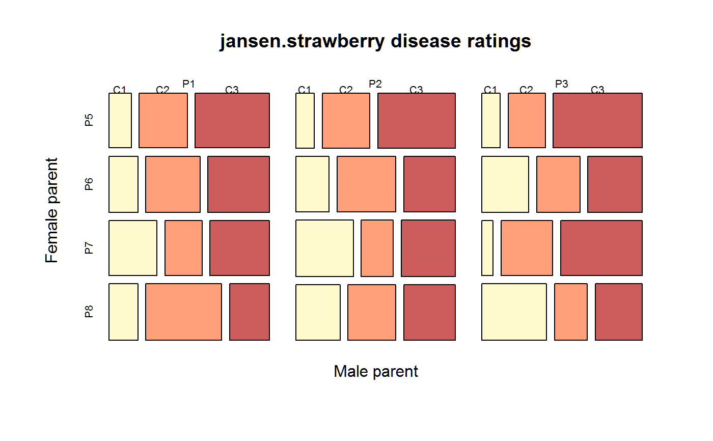

jansen.strawberry.RdOrdered disease ratings of strawberry crosses.
data("jansen.strawberry")
A data frame with 144 observations on the following 5 variables.
malemale parent
femalefemale parent
blockblock
categorydisease damage, C1 < C2 < C3
countnumber of plants in each category
In strawberries, red core disease is caused by a fungus, Phytophtora fragariae. This experiment evaluated different populations for damage caused by red core disease.
There were 3 male strawberry plants and 4 DIFFERENT female strawberry plants that were crossed to create 12 populations. Note: Jansen labeled the male parents 1,2,3 and the female parents 1,2,3,4. To reduce confusion, this data labels the female parents 5,6,7,8.
The experiment had four blocks with 12 plots each (one for each population). Plots usually had 10 plants, but some plots only had 9 plants. Each plant was assessed for damage from fungus and rated as belonging to category C1, C2, or C3 (increasing damage).
Used with permission of Hans Jansen.
J. Jansen, 1990. On the statistical analysis of ordinal data when extravariation is present. Applied Statistics, 39, 75-84, Table 1. https://doi.org/10.2307/2347813
# \dontrun{ library(agridat) data(jansen.strawberry) dat <- jansen.strawberry dat <- transform(dat, category=ordered(category, levels=c('C1','C2','C3'))) dtab <- xtabs(count ~ male + female + category, data=dat) ftable(dtab)#> category C1 C2 C3 #> male female #> P1 P5 6 13 20 #> P6 8 15 17 #> P7 13 10 16 #> P8 8 21 11 #> P2 P5 5 13 21 #> P6 9 16 14 #> P7 16 9 15 #> P8 12 13 14 #> P3 P5 5 10 24 #> P6 13 12 15 #> P7 3 14 22 #> P8 18 9 13mosaicplot(dtab, color=c("lemonchiffon1","lightsalmon1","indianred"), main="jansen.strawberry disease ratings", xlab="Male parent", ylab="Female parent")#> #>#> #> #>#> #> #># Friendly suggests a minimal model is [MF][C] # m1 <- loglm( ~ 1*2 + 3, dtab) # Fails, only with devtools # mosaic(m1) # }